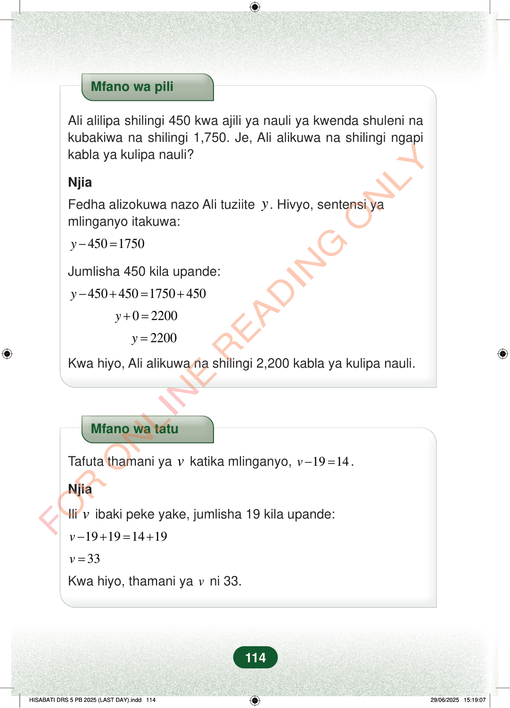

Mfano wa piliAli alilipa shilingi 450 kwa ajili ya nauli ya kwenda shuleni nakubakiwa na shilingi 1,750. Je, Ali alikuwa na shilingi ngapikabla ya kulipa nauli?NjiaFedha alizokuwa nazo Ali tuziitey. Hivyo, sentensi yamlinganyo itakuwa:4501750y−=Jumlisha 450 kila upande:4504501750450y−+=+02200y+=2200y=Kwa hiyo, Ali alikuwa na shilingi 2,200 kabla ya kulipa nauli.Mfano wa tatuTafuta thamani yavkatika mlinganyo,1914v−=.NjiaIlivibaki peke yake, jumlisha 19 kila upande:19191419v−+=+33v=Kwa hiyo, thamani yavni 33.114
Mfano wa pili
Ali alilipa shilingi 450 kwa ajili ya nauli ya kwenda shuleni na kubakiwa na shilingi 1,750. Je, Ali alikuwa na shilingi ngapi kabla ya kulipa nauli?
Njia
Fedha alizokuwa nazo Ali tuziite y . Hivyo, sentensi ya mlinganyo itakuwa:
450 1750 y − =
Jumlisha 450 kila upande:
450 450 1750 450 y − + = +
0 2200 y + =
2200 y =
Kwa hiyo, Ali alikuwa na shilingi 2,200 kabla ya kulipa nauli.
Mfano wa tatu
Tafuta thamani ya v katika mlinganyo, 19 14 v − = .
Njia
Ili v ibaki peke yake, jumlisha 19 kila upande:
19 19 14 19 v − + = +
33 v =
Kwa hiyo, thamani ya v ni 33.
114
Mfano wa pili unaonyesha jinsi ya kutatua mlinganyo wa fedha. Ali alipolipa shilingi 450 na kubakiwa na shilingi 1,750, alikuwa na shilingi 2,200 kabla ya kulipa nauli.Mfano wa piliAli alilipa shilingi 450 kwa ajili ya nauli ya kwenda shuleni na kubakiwa na shilingi 1,750.Je, Ali alikuwa na shilingi ngapi kabla ya kulipa nauli?NjiaFedha alizokuwa nazo Ali tuziite y.Hivyo, sentensi ya mlinganyo itakuwa:y - 450 = 1750Jumlisha 450 kila upande:y - 450 + 450 = 1750 + 450y + 0 = 2200y = 2200Kwa hiyo, Ali alikuwa na shilingi 2,200 kabla ya kulipa nauli.Mfano wa tatu unaonyesha kutafuta thamani ya v katika mlinganyo v - 19 = 14. Ukijumlisha 19 kila upande, unapata v ni 33.Mfano wa tatuTafuta thamani ya v katika mlinganyo, <math><mrow><mi>v</mi><mo>−</mo><mn>19</mn><mo>=</mo><mn>14</mn></mrow></math>.NjiaIli v ibaki peke yake, jumlisha 19 kila upande:v - 19 + 19 = 14 + 19v = 33Kwa hiyo, thamani ya v ni 33.